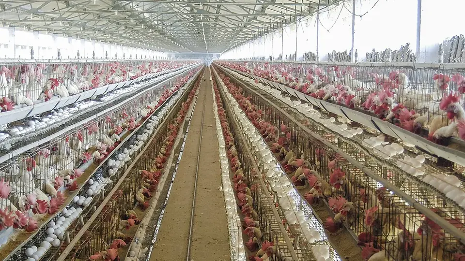

🦠 वायरस जनित🗓️ सर्दी व मौसम बदलने पर📍 पूरे भारत में
मुर्गी में रानीखेत रोग
Ranikhet (Newcastle) Disease in Poultry — Symptoms, Vaccine & Control
बिना टीके वाले झुंड में यह एक हफ़्ते में 90–100% तक पक्षी मार देती है, और इसका कोई इलाज नहीं है। पहचान, पूरा टीका कार्यक्रम और टीका फेल होने की असली वजह।
✍️ Kunal Rajput — KrashiMitra⏱️ 10 मिनट पढ़ें📅 अगस्त 2026

नमक्कल (तमिलनाडु) का मुर्गी फार्म। तस्वीर स्वस्थ पक्षियों की है — रानीखेत की पहचान लेख की तालिका से करें।
इलाज नहीं है — इसलिए पूरा खेल बचाव का है
💀
90–100%
बिना टीके मृत्यु दर
💉
5–7 दिन
पहला लासोटा टीका
🧊
2–8°C
टीके की सही कोल्ड चेन
📖
भूमिका
कल शाम तक मुर्गियाँ ठीक थीं। सुबह दाना कम खाया, दोपहर तक कुछ सुस्त बैठ गईं, और तीसरे दिन आधा बाड़ा ख़ाली। भारत में मुर्गियों की सबसे ज़्यादा मौतें जिस एक बीमारी से होती हैं, वह है रानीखेत रोग — अंग्रेज़ी में न्यूकैसल डिज़ीज़ (Newcastle Disease)। बिना टीके वाले झुंड में यह 90 से 100 प्रतिशत तक पक्षी मार सकती है, और वह भी हफ़्ते भर के अंदर।
सबसे बड़ी ग़लतफ़हमी यही है कि "दवा दे देंगे तो ठीक हो जाएगी"। रानीखेत का कोई इलाज नहीं है — न कोई दवा, न कोई इंजेक्शन। एक बार वायरस बाड़े में घुस गया तो आप सिर्फ़ नुकसान कम कर सकते हैं, रोक नहीं सकते। इसीलिए इस लेख का पूरा ज़ोर पहचान, टीके और बचाव पर है — और उस बात पर, जो सबसे ज़्यादा लोगों को धोखा देती है: टीका लगवाने के बाद भी मुर्गियाँ क्यों मर जाती हैं।
विज्ञापन
🔍
रानीखेत रोग क्या है?
रानीखेत एक वायरस से होने वाली बीमारी है, बैक्टीरिया से नहीं। इसका वायरस मुर्गी के साँस के रास्ते और पेट के रास्ते — दोनों तरफ़ से हमला करता है, और कई बार दिमाग़ व नसों तक पहुँच जाता है। यही वजह है कि इसमें एक साथ हाँफना भी दिखता है, हरी पतली बीट भी, और गर्दन का मुड़ जाना भी।
नाम भारत से ही आया है। सन 1928 में उत्तराखंड के रानीखेत में इसका बड़ा प्रकोप दर्ज हुआ था, तभी से देश भर में यह इसी नाम से जानी जाती है। दुनिया में इसे न्यूकैसल डिज़ीज़ कहते हैं।
वायरस बाड़े में आने के बाद 2 से 15 दिन (आम तौर पर 5–6 दिन) चुपचाप रहता है। इसी दौरान संक्रमित पक्षी बिना कोई लक्षण दिखाए बाकी सबमें बीमारी फैलाता रहता है — और जब तक लक्षण दिखते हैं, तब तक पूरा झुंड चपेट में आ चुका होता है।
💡
रानीखेत की गंभीरता वायरस के रूप पर निर्भर करती है। उग्र रूप में मुर्गियाँ बिना कोई ख़ास लक्षण दिखाए 2–3 दिन में मर जाती हैं; मध्यम रूप में साँस और नसों के लक्षण आते हैं और मृत्यु दर कम रहती है; हल्का रूप सिर्फ़ हल्की खाँसी और अंडा गिरने के रूप में दिखता है। यही तीसरा, हल्का रूप ही लासोटा जैसे जीवित टीकों में इस्तेमाल होता है।
🦠
यह फैलता कैसे है?
रानीखेत को हवा से ज़्यादा आदमी और सामान फैलाते हैं। बीमार पक्षी की बीट, नाक-मुँह के पानी और साँस में वायरस भरा होता है, और वह इन रास्तों से नए बाड़े तक पहुँचता है:
बीमार या नया ख़रीदा पक्षी: सबसे आम रास्ता। बाज़ार से लाया गया एक पक्षी पूरे झुंड को ख़त्म कर सकता है।
आपके जूते और कपड़े: दूसरे फार्म या मुर्गी मंडी घूमकर सीधे अपने बाड़े में घुसना — इसी से सबसे ज़्यादा प्रकोप शुरू होते हैं।
दाना, पानी और बर्तन: बीट से गंदा हुआ दाना या साझा पानी।
अंडे की ट्रे, टोकरी, बोरी और गाड़ी के पहिये: व्यापारी की ख़ाली ट्रे वापस बाड़े में रखना बड़ी चूक है।
कौवे, चील और जंगली पक्षी: खुले दाने पर बैठकर वायरस छोड़ जाते हैं।
मरे हुए पक्षी खुले में फेंकना: कुत्ते-कौवे उन्हें खींचकर पूरे गाँव में फैला देते हैं।
⚠️
वायरस ठंड में हफ़्तों और मरे पक्षी के शरीर में महीनों ज़िंदा रह सकता है। यही वजह है कि सर्दी में और मौसम बदलते समय (सितंबर–नवंबर, फरवरी–मार्च) प्रकोप सबसे ज़्यादा आते हैं।
📊
पहचान — स्वस्थ मुर्गी बनाम रानीखेत ग्रस्त
पहचान बिंदु
✅ स्वस्थ
❌ रानीखेत ग्रस्त
दाना-पानी
रोज़ की खपत एक जैसी
खपत अचानक गिर जाती है — यही पहला संकेत है
बीट
गाढ़ी, ऊपर सफ़ेद परत
पतली, पानी जैसी, हरी या हरी-पीली
साँस
शांत, बिना आवाज़
मुँह खोलकर हाँफना, घर्र-घर्र की आवाज़, छींक
गर्दन
सीधी
एक तरफ़ मुड़ी या उलटी, सिर पीठ पर पलटा हुआ
चाल
सामान्य
गोल-गोल घूमना, पंख-टाँग का लकवा, काँपना
कलगी व गलचर्म
लाल, चमकदार
नीली-बैंगनी, सूजी हुई
आँख व चेहरा
साफ़, सूखा
आँख से पानी, चेहरे व आँख के आसपास सूजन
अंडा (लेयर में)
रोज़ का उत्पादन स्थिर
उत्पादन तेज़ी से गिरना, नरम छिलके व बेढंगे अंडे
मृत्यु
इक्का-दुक्का
रोज़ बढ़ती हुई, 2–3 दिन में बहुत ज़्यादा
📓
रोज़ का दाना और पानी लिखकर रखें। रानीखेत का सबसे पहला संकेत मौत नहीं, खपत का गिरना है — और वह लक्षण दिखने से एक-दो दिन पहले पता चल जाता है। यह एक कॉपी और पाँच मिनट का काम है, पर कई बार यही पूरा बैच बचा लेता है।
विज्ञापन
🤔
किन बीमारियों से धोखा होता है?
हर मौत रानीखेत नहीं होती। ग़लत पहचान का मतलब है ग़लत बचाव — इसलिए फ़र्क समझना ज़रूरी है:
गंबोरो (IBD): ज़्यादातर 3–6 हफ़्ते के चूज़ों में। सफ़ेद-पानी जैसी बीट, पक्षी अपनी ही गुदा पर चोंच मारता है, अचानक तेज़ मौतें — पर गर्दन नहीं मुड़ती।
बर्ड फ्लू: लक्षण मिलते-जुलते हैं पर मौतें और तेज़ होती हैं और टाँगों पर ख़ून के धब्बे दिख सकते हैं। यह क़ानूनी रूप से सूचित करने वाली बीमारी है — शक हो तो तुरंत पशु चिकित्सा अधिकारी को बताएँ।
कॉक्सीडियोसिस: बीट में ख़ून आता है, साँस के लक्षण नहीं होते, और इसका इलाज उपलब्ध है।
CRD (साँस की पुरानी बीमारी): घर्र-घर्र और छींक तो होती है पर मौतें कम, और हरी बीट या मुड़ी गर्दन नहीं।
अमोनिया व गीला लिटर: खाँसी और आँख से पानी दे सकता है, पर पूरे झुंड में एक जैसा और मौत के बिना।
⚠️
पक्का निदान सिर्फ़ प्रयोगशाला में होता है। मौतें शुरू होते ही 2–3 ताज़े मरे पक्षी ठंडे डिब्बे में रखकर नज़दीकी पशु चिकित्सालय या राज्य रोग जाँच प्रयोगशाला भेजें। सड़े हुए शव पर जाँच नहीं हो पाती।
🚨
बीमारी आ जाए तो क्या करें?
याद रखें — रानीखेत की कोई दवा नहीं है। जो भी किया जाता है वह नुकसान कम करने और बाकी पक्षियों को बचाने के लिए होता है:
तुरंत अलग करें: बीमार दिखने वाले पक्षियों को दूसरे कमरे या दूर के बाड़े में हटाएँ। उनका दाना-पानी अलग रखें।
बाड़ा बंद करें: न कोई पक्षी बाहर जाए, न अंदर आए। कोई नया चूज़ा इस दौरान न लाएँ।
पशु चिकित्सक को बुलाएँ: वे द्वितीयक जीवाणु संक्रमण रोकने के लिए एंटीबायोटिक और सहारे के लिए विटामिन-इलेक्ट्रोलाइट दे सकते हैं। यह रानीखेत का इलाज नहीं — बची हुई मुर्गियों को टिकाने का सहारा है।
पानी और गर्मी बनाए रखें: पीने का साफ़ पानी सामने रखें, ठंड से बचाएँ। कई पक्षी बीमारी से नहीं, कमज़ोरी और पानी की कमी से जाते हैं।
मरे पक्षी सही तरीक़े से नष्ट करें: बाड़े से दूर 3–4 फुट गहरा गड्ढा, ऊपर-नीचे चूना डालकर दबाएँ, या जला दें। खुले में फेंकना पूरे गाँव में बीमारी फैलाने का सबसे तेज़ रास्ता है।
बीमार पक्षी बेचें नहीं: घबराहट में बीमार झुंड मंडी में बेच देना ही अगले गाँव का प्रकोप बनता है।
प्रकोप के बीच ख़ुद से टीका न लगाएँ: बीमार पक्षी में टीका काम नहीं करता और तनाव बढ़ाकर मौतें और तेज़ कर सकता है। क्या करना है, यह पशु चिकित्सक तय करेंगे।
🛡️
बिना पैसे खर्च किए बचाव — जैव सुरक्षा
टीके से पहले यह आता है, और यह लगभग मुफ़्त है। रानीखेत को बाड़े तक पहुँचाने वाला ज़्यादातर काम हम ख़ुद करते हैं:
बाड़े के लिए अलग चप्पल: दरवाज़े पर रखी रहे, अंदर जाते ही बदलें। यह एक जोड़ी चप्पल पूरे टीके जितनी कीमती है।
चूने का फुटबाथ: दरवाज़े पर चूने या फिनाइल वाला उथला तसला रखें, हर 2–3 दिन में बदलें।
नए पक्षी 2–3 हफ़्ते अलग रखें: कहीं से भी नया पक्षी आए, सीधे झुंड में न मिलाएँ।
मंडी से लौटा पक्षी वापस न मिलाएँ: जो पक्षी बिकने गया और बिका नहीं, वह अब बाहर का पक्षी है।
बाहरी लोगों को बाड़े में न घुसने दें: ख़ासकर वे जो दूसरा फार्म चलाते हैं या मुर्गी का व्यापार करते हैं।
अंडे की ट्रे और बोरी दोबारा न लें: व्यापारी की ट्रे बाहर ही रखें।
दाना ढककर रखें: कौवे और जंगली पक्षी उस पर न बैठें।
ऑल-इन ऑल-आउट: पूरा बैच एक साथ निकालें, बाड़ा धोकर चूने से पुताई करें और 10–15 दिन ख़ाली सुखाएँ, फिर नया बैच डालें।
लिटर सूखा रखें: गीला लिटर अमोनिया बनाता है, अमोनिया साँस की नली कमज़ोर करता है, और कमज़ोर नली से वायरस आसानी से घुसता है।
💉
टीका कार्यक्रम — कब कौन सा टीका
रानीखेत से बचने का एक ही पक्का रास्ता है — समय पर टीका। नीचे आम तौर पर अपनाया जाने वाला कार्यक्रम है:
उम्र
टीका
कैसे दें
किसके लिए
5–7 दिन
रानीखेत — लासोटा / F1 (हल्का जीवित टीका)
आँख या नाक में एक बूँद
सभी चूज़े
24–28 दिन
रानीखेत — लासोटा बूस्टर
पीने के पानी में या बूँद
सभी
8–10 हफ़्ते
रानीखेत — R2B (मुक्तेश्वर स्ट्रेन)
चमड़ी के नीचे सुई से
लेयर, देसी व लंबे समय रखे जाने वाले पक्षी
अंडा शुरू होने से पहले
रानीखेत — मारा हुआ (किल्ड) टीका या लासोटा
पशु चिकित्सक की सलाह से
लेयर मुर्गियाँ
अंडा देने के दौरान
लासोटा बूस्टर, हर 2–3 महीने
पीने के पानी में
लेयर मुर्गियाँ
🧊
जहाँ बर्फ़ और फ्रिज की व्यवस्था मुश्किल है — जैसे गाँव की बैकयार्ड मुर्गियों में — वहाँ ताप-सहनशील (थर्मोस्टेबल) रानीखेत टीका उपलब्ध है, जो सामान्य तापमान पर भी कुछ समय टिक जाता है। राज्य पशुपालन विभाग के टीकाकरण शिविरों में यह अक्सर मुफ़्त लगाया जाता है — अपने ब्लॉक के पशु चिकित्सा अधिकारी से पूछें।
⚠️
ऊपर दिया कार्यक्रम आम मार्गदर्शन है। असली कार्यक्रम इलाके में बीमारी के दबाव, नस्ल और हैचरी में पहले लग चुके टीकों पर निर्भर करता है — इसलिए अपने पशु चिकित्सा अधिकारी या KVK से अपने इलाके का कार्यक्रम लिखवाकर लें, और टीके की शीशी पर छपी विधि व मात्रा ज़रूर पढ़ें।
❄️
टीका लगवाने के बाद भी मुर्गियाँ क्यों मर जाती हैं?
यह सबसे ज़रूरी सेक्शन है। रानीखेत का टीका जीवित पर कमज़ोर वायरस होता है। अगर वह वायरस पक्षी तक पहुँचने से पहले ही मर गया, तो आपने पक्षी को पानी पिलाया — टीका नहीं लगाया। और यह बात पता तब चलती है जब बीमारी आ जाती है।
क्लोरीन वाला पानी: नल, टंकी या ब्लीचिंग किए हुए पानी की क्लोरीन टीके के वायरस को मार देती है। पानी में टीका देने से पहले प्रति लीटर लगभग 2–3 ग्राम स्किम्ड मिल्क पाउडर मिलाकर 15–20 मिनट रखें — यह क्लोरीन को बाँध लेता है और टीके को बचाता है।
टूटी कोल्ड चेन: टीका दुकान से बाड़े तक 2–8°C पर, बर्फ़ वाले डिब्बे में आना चाहिए। जेब में, बाइक की डिक्की में या धूप में रखा टीका बेकार हो चुका होता है।
घोलने के बाद देर करना: घोलने के बाद टीका 30 मिनट से 1 घंटे के अंदर पिला देना चाहिए। उसके बाद बचा हुआ घोल फेंक दें।
लोहे या जस्ते के बर्तन: धातु के बर्तन टीके को निष्क्रिय कर देते हैं। हमेशा प्लास्टिक या मिट्टी के बर्तन इस्तेमाल करें।
दोपहर की गर्मी में देना: टीका हमेशा सुबह जल्दी या शाम को ठंडे समय में दें।
प्यास न लगाना: पानी में टीका देने से 1–2 घंटे पहले पानी हटा दें, ताकि सारे पक्षी घोल जल्दी और पूरा पी जाएँ। वरना आधे पक्षी पीते ही नहीं।
बर्तन कम होना: इतने बर्तन रखें कि सारे पक्षी एक साथ पहुँच सकें, वरना कमज़ोर पक्षी — जिन्हें सबसे ज़्यादा ज़रूरत है — छूट जाते हैं।
बीमार या कृमि-ग्रस्त पक्षी: बीमार, कमज़ोर और पेट के कीड़ों वाले पक्षी में टीके से रोग-प्रतिरोध बनता ही नहीं। टीके से पहले कृमिनाशक दें।
बूस्टर छोड़ देना: पहला टीका अकेले काफ़ी नहीं। बूस्टर छूटा तो सुरक्षा कुछ ही हफ़्तों में कमज़ोर पड़ जाती है।
✅
टीकाकरण के बाद ख़ाली शीशी और डिब्बा तुरंत जला दें या गहरा दबा दें — उसमें जीवित वायरस बचा रहता है। और टीके की तारीख़ कॉपी में लिख लें; अगला बूस्टर याद रखने का यही सबसे सस्ता तरीका है।
🚫
ये गलतियाँ कभी न करें
दवा से ठीक करने की कोशिश — रानीखेत वायरस से होता है, और एंटीबायोटिक वायरस पर काम नहीं करते। पैसा दवा में नहीं, टीके और सफ़ाई में लगाएँ।
बीमारी दिखने पर टीका लगवाना — तब तक देर हो चुकी होती है। टीका बीमारी से पहले लगता है, बीमारी में नहीं।
मरे पक्षी खुले में फेंकना — यह सिर्फ़ आपका नहीं, पूरे गाँव का नुकसान करता है।
बीमार झुंड को घबराकर बेच देना — बीमारी अगले फार्म तक पहुँचती है और घूमकर आपके ही इलाके में लौटती है।
बिना बर्फ़ के टीका लाना — सबसे आम और सबसे महंगी चूक। टीका ख़रीदते समय बर्फ़ का डिब्बा साथ ले जाएँ।
दूसरे फार्म देखकर सीधे अपने बाड़े में घुसना — कपड़े और जूते बदले बिना नहीं।
अलग-अलग उम्र के पक्षी एक साथ रखना — बड़े पक्षी बिना बीमार दिखे वायरस छोड़ते रहते हैं और छोटे चूज़े मरते हैं।
टीके का बचा घोल अगले दिन के लिए रखना — घुला हुआ टीका उसी दिन, उसी घंटे का होता है।
🗓️
साल भर का ध्यान — कब क्या करें
समय
ज़रूरी काम
हर रोज़
दाना-पानी की खपत लिखें; सुस्त, हाँफते या हरी बीट वाले पक्षी अलग करें
हर हफ़्ते
लिटर पलटें, गीला हिस्सा बदलें; बर्तन धोएँ; फुटबाथ का चूना बदलें
हर बैच से पहले
बाड़ा ख़ाली करके धोएँ, चूने से पुताई, 10–15 दिन सुखाएँ
मानसून से पहले (मई–जून)
छत की लीक ठीक करें, सूखे लिटर का इंतज़ाम, बूस्टर की तारीख़ जाँचें
सितंबर–नवंबर
सबसे ज़्यादा ख़तरे का समय — बूस्टर पक्का करें, बाहरी आना-जाना बंद रखें
सर्दी (दिसंबर–जनवरी)
रात में बाड़ा ढकें पर हवा आती रहे; बहुत ठंडा पानी न पिलाएँ
फरवरी–मार्च
मौसम बदलने पर दोबारा ख़तरा — खपत पर कड़ी नज़र रखें
✅
निष्कर्ष
तीन बातें याद रखें। पहली — रानीखेत का इलाज नहीं है, सिर्फ़ बचाव है, इसलिए दवा के भरोसे मत बैठिए। दूसरी — टीका तभी काम करता है जब वह बर्फ़ में आया हो, बिना क्लोरीन वाले पानी में घुला हो और एक घंटे के अंदर पिलाया गया हो; इनमें से एक भी चूका तो टीका लगा ही नहीं। तीसरी — दाना-पानी की रोज़ की खपत ही सबसे पहला और सबसे सस्ता अलार्म है, मौत नहीं।
और बाड़े के दरवाज़े पर रखी वह एक जोड़ी अलग चप्पल कई बार पूरे बैच से क़ीमती साबित होती है।
रानीखेत में जीत उसी की होती है जो बीमारी आने से पहले तैयार हो।
विज्ञापन
❓
अक्सर पूछे जाने वाले सवाल
1रानीखेत रोग का इलाज क्या है?
रानीखेत रोग का कोई इलाज नहीं है — यह वायरस से होता है और कोई दवा या इंजेक्शन इसे ठीक नहीं करता। पशु चिकित्सक एंटीबायोटिक और विटामिन सिर्फ़ द्वितीयक संक्रमण रोकने और बचे पक्षियों को सहारा देने के लिए देते हैं। बचाव का एक ही पक्का रास्ता है — समय पर टीका और सख़्त सफ़ाई।
2मुर्गी में रानीखेत रोग के लक्षण क्या हैं?
सबसे पहले दाना-पानी की खपत अचानक गिरती है, फिर हरी या हरी-पीली पतली बीट, मुँह खोलकर हाँफना और घर्र-घर्र की आवाज़ आती है। आगे बढ़ने पर गर्दन का एक तरफ़ मुड़ जाना, गोल-गोल घूमना, पंख-टाँग का लकवा और कलगी का नीला पड़ना दिखता है। लेयर मुर्गियों में अंडा उत्पादन तेज़ी से गिर जाता है और छिलके नरम हो जाते हैं।
3रानीखेत का टीका कब लगाना चाहिए?
पहला टीका 5–7 दिन की उम्र पर लासोटा (F1), आँख या नाक में एक बूँद के रूप में लगता है, और बूस्टर 24–28 दिन पर। लंबे समय रखे जाने वाले पक्षियों — लेयर और देसी मुर्गियों — को 8–10 हफ़्ते पर R2B सुई से लगाया जाता है, और अंडा देने के दौरान हर 2–3 महीने बूस्टर। असली कार्यक्रम इलाके के हिसाब से बदलता है, इसलिए पशु चिकित्सा अधिकारी से लिखवाकर लें।
4टीका लगवाने के बाद भी मुर्गियाँ क्यों मर जाती हैं?
सबसे आम वजह यह है कि टीका पक्षी तक ज़िंदा पहुँचा ही नहीं। रानीखेत का टीका जीवित पर कमज़ोर वायरस है, जो धूप, गर्मी और पीने के पानी की क्लोरीन से मर जाता है। टीका 2–8°C पर बर्फ़ में लाएँ, पानी में देने से पहले प्रति लीटर 2–3 ग्राम स्किम्ड मिल्क पाउडर मिलाएँ, प्लास्टिक या मिट्टी के बर्तन इस्तेमाल करें और घोलने के एक घंटे के अंदर पिला दें।
5रानीखेत रोग कैसे फैलता है?
यह मुख्य रूप से बीमार पक्षी की बीट, नाक-मुँह के पानी और साँस से फैलता है, पर बाड़े तक पहुँचाने का काम ज़्यादातर हम ख़ुद करते हैं — दूसरे फार्म या मुर्गी मंडी से लौटे जूते-कपड़े, अंडे की ट्रे, बोरी, गाड़ी के पहिये, नया ख़रीदा पक्षी और खुले में फेंके गए मरे पक्षी। कौवे और जंगली पक्षी भी वायरस लाते हैं।
6रानीखेत रोग में कितनी मुर्गियाँ मर जाती हैं?
बिना टीके वाले झुंड में उग्र रूप की मृत्यु दर 90 से 100 प्रतिशत तक पहुँच सकती है, और यह सब एक हफ़्ते के अंदर हो जाता है। छोटे चूज़ों में नुकसान सबसे ज़्यादा होता है। ठीक से टीका लगे झुंड में वही वायरस बहुत कम नुकसान करता है।
7क्या रानीखेत रोग इंसानों को होता है?
इंसानों में यह वायरस सिर्फ़ हल्का आँख आना (कंजंक्टिवाइटिस) कर सकता है, जो कुछ दिन में अपने आप ठीक हो जाता है — यह कोई गंभीर बीमारी नहीं है। फिर भी बीमार पक्षियों को संभालने के बाद हाथ साबुन से ज़रूर धोएँ, और मुर्गी का माँस व अंडा हमेशा अच्छी तरह पकाकर ही खाएँ।
8रानीखेत और गंबोरो में क्या फर्क है?
गंबोरो ज़्यादातर 3–6 हफ़्ते के चूज़ों में होता है, उसमें बीट सफ़ेद-पानी जैसी होती है और गर्दन नहीं मुड़ती, जबकि रानीखेत किसी भी उम्र में होता है, उसमें बीट हरी होती है और गर्दन मुड़ना व लकवा उसका ख़ास लक्षण है। दोनों वायरस से होते हैं, दोनों का इलाज नहीं है, और दोनों के टीके अलग-अलग उम्र पर लगते हैं।
🌾
KrashiMitra.in — आपका विश्वसनीय कृषि साथी
मंडी भाव, सरकारी योजनाएं, बीज-खाद की जानकारी और फसल रोग उपचार — सब कुछ हिंदी में।